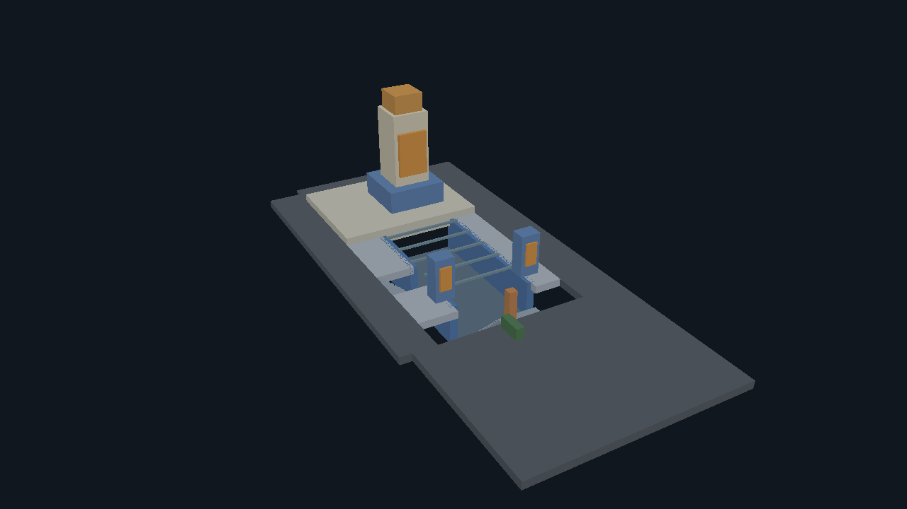
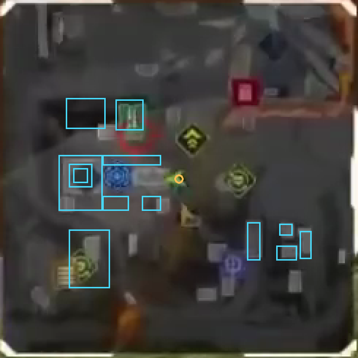
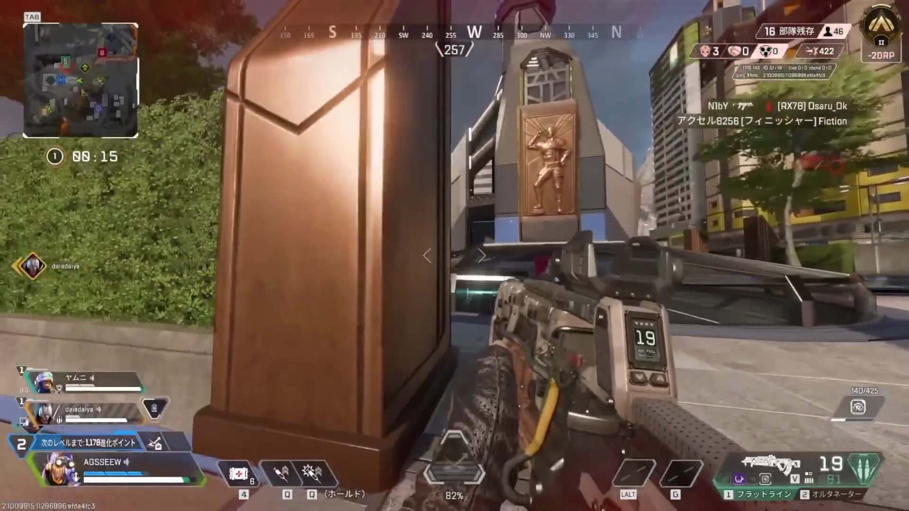
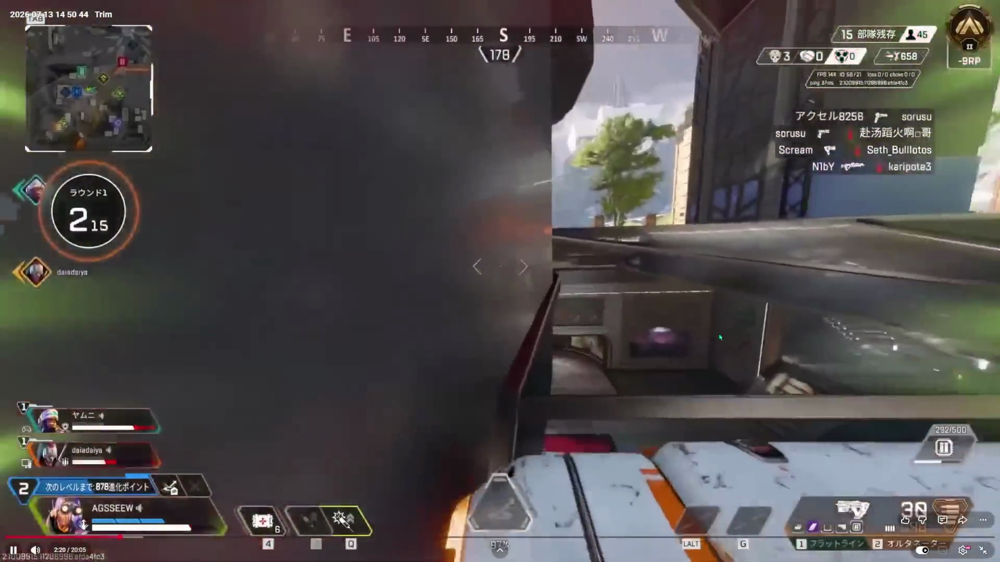
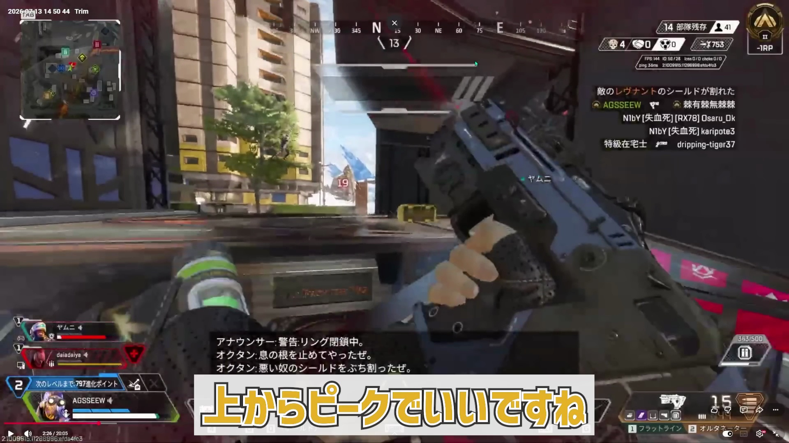

3D FIGHT REPLAY · 2026-10-18
ミニマップと複数の視点から作る3Dマップ
動画左上のミニマップを平面図として使い、建物の輪郭を3Dモデルの土台にしました。さらに、同じ場所を別方向から見た映像と、公式の建築紹介を参考に、開口部、地下の床、階段、柱を追加しています。
今回は、位置の基準を「ミニマップの中の同じ地点」に変えた、作成途中のモデルです。平面の大まかな輪郭には画像の根拠があります。高さ、階層、細かな柱や階段の位置はまだ仮の設定です。実測した地形や、正しい距離が保証されたマップではありません。
3Dモデルを回して確認する

3Dモデルを読み込んでいます。
形状をクリックすると、その位置の根拠を確認できます。

水色の輪郭は、ミニマップから手動で指定した範囲です。水色のピンは、自分の平面位置を示します。ピンの高さは、実際に立っている階層を表しません。
この素材には、同じ戦闘を繰り返す編集や別の画面の録画が含まれます。スライダーは素材ファイル内の時刻です。ゲーム内の時間が連続しているとは扱っていません。位置は1秒ごとのサンプルだけを表示し、失敗した時間を補間していません。
複数の視点から分かった構造



以前のモデルでは、戦闘エリアを一枚の床として扱っていました。今回は、低い床と周囲の通路を分け、開口部を埋めない構成にしました。ただし、映像で「下の階がある」と確認できることと、その階の深さを正確に測れることは別です。階段の段数や細かな位置も、現時点では仮置きです。
ネット上の情報との照合
場所はWorld’s EdgeのMonumentにある博物館周辺が有力です。EAの公式紹介には、地下へ続く構造とガラスの天井が説明されています。また、Respawnのアートディレクターが公開した制作紹介には、青と金色の配色や建築の意匠が説明されています。動画の外観と共通しており、モデルの構成を考える参考にしました。
公開の全体マップとも画像照合を試しましたが、信頼できる対応は得られませんでした。マップの版や表示の違いも残るため、場所を確定したとは扱っていません。今回は、動画のミニマップ内だけで一貫した座標を使っています。第三者のマップ画像やゲームの3Dアセットは、このページやモデルにコピーしていません。
自分の位置をミニマップから求めた結果
ミニマップに映る建物などの目印を基準画像と照合し、回転・拡大率・ずれを求めます。その変換を、自分を示す中央のマーカーにも適用すると、別の時刻の自分の位置を、基準の平面図へ戻せます。
約48秒の素材を1秒ごとに調べた49点のうち、20点が現在の照合条件を通りました。基準画像自身を除くと19点です。計算に使わなかった目印の85%以上が2ピクセル以内に一致し、ずれの中央の値が1ピクセル以下であることなどを要求しています。一部の誤対応も含めた95%のずれは、採用した時刻の中央の値で約2.48ピクセルです。
これはミニマップ画像内での一致の確認です。ゲーム内のメートル座標、正解位置との距離、高さ、どの階にいるかは未検証です。ミニマップで平面位置を押さえ、3D映像側で階層と高さを確かめる、という分担で進めます。
モデルとデータを保存する

55個の形状を独立したデータとして出力しています。高さや細部を今後の観測で修正しやすい構成です。単位は基準ミニマップのピクセルで、メートルではありません。